Cara memakai sistem HR, langkah demi langkah: karyawan baru, berkas 201, kontrak, absensi dari mesin, cuti, run gaji, persetujuan pimpinan, sampai gaji dibayar dan tercatat di buku besar. Setiap langkah di dokumen ini sudah dijalankan dalam simulasi terhadap database yang sama dengan sistem live.
Versi 24 September 2026 · dibuat otomatis dari tabel pengetahuan John Lau (ops_asst.processes). Gambar diambil dari uji jalan lewat layar live (18 langkah, 2026-09-24) dengan data uji; yang tidak ada di uji jalan diambil dari mode demo.
Siapa mengerjakan apa. Staf HRD (akses hrd dan payroll) mencatat karyawan, berkas, kontrak, absensi, cuti, dan menyiapkan run gaji. Pimpinan (pemegang approve_funds) menyetujui run gaji — yang menyiapkan tidak bisa menyetujui. Keuangan (pemegang post_ledger) membayar run yang sudah disetujui dan mencatatnya ke buku besar. Aturan gaji dan pola jadwal dipegang IT.
Gaji dihitung dari hari. Tidak ada tombol hitung: setiap kali halaman run dibuka, gaji dihitung ulang dari absensi, tanda hari, cuti dan lembur yang disetujui. Karena itu run tidak bisa disetujui selama masih ada hari yang "belum dibaca".
Tanya John Lau kapan saja. Tombol John Lau ada di pojok kanan bawah setiap halaman. Tanyakan "kenapa run gaji tidak bisa disetujui?" atau "bagaimana cara mencatat karyawan sakit?". Panduannya tetap terbuka saat Anda pindah halaman, dan langkah yang sesuai dengan halaman yang sedang dibuka ditandai you are here. Percakapan tersimpan, jadi tidak hilang walaupun halaman di-refresh.
Minta John Lau menyiapkan pengajuan cuti. Ketik "ajukan cuti untuk Wulan 2 sampai 3 Oktober, acara keluarga". John Lau menyiapkan draft pengajuan, dan tidak ada yang tersimpan sampai Anda memeriksanya dan menekan Ya, tulis. Gaji, absensi dan berkas 201 seseorang tidak dibacakan John Lau — angkanya dibaca di layar HRD oleh yang berhak.
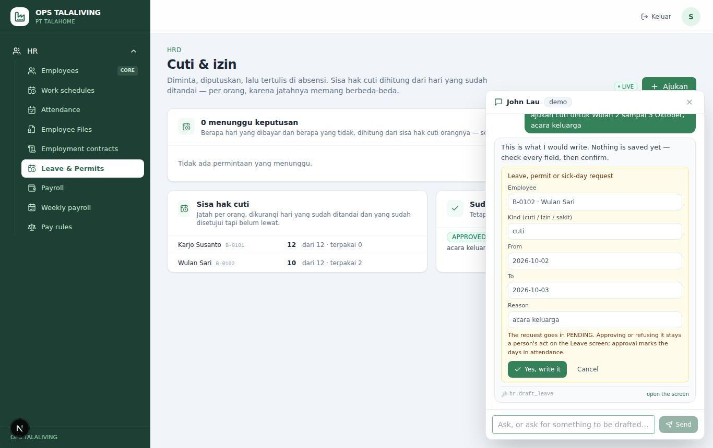
Aturan gaji (pola lima hari, lembur, keterlambatan, pembagi upah bulanan) dan pola jadwal (jam masuk, istirahat, pulang, Jumat) disimpan sebagai versi yang berlaku dari sebuah tanggal. Dipegang IT, bukan HRD, karena satu perubahan menggeser gaji semua orang.
Berikutnya: Menambah dan mengubah data karyawan
Karyawan dicatat dengan nomor yang sama dengan nomor di mesin absen, unit, cara dibayar (bulanan, harian, per jam), upah dan tunjangan per hari hadir. Nomor mesin itulah yang menyambungkan tap sidik jari ke orangnya.
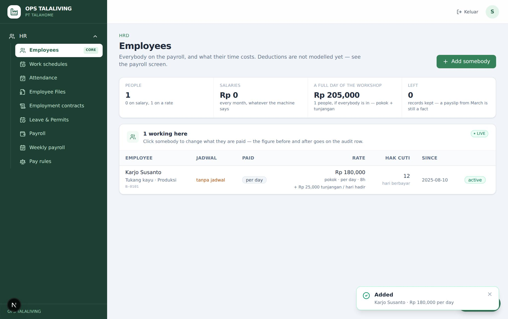
Berikutnya: Memasang pola kerja ke karyawan
Setiap orang harus punya pola kerja supaya jam kerjanya bisa dihitung. Pola ikut unitnya (misalnya Produksi → PRODUKSI); yang berbeda dari unitnya dipasang sendiri.
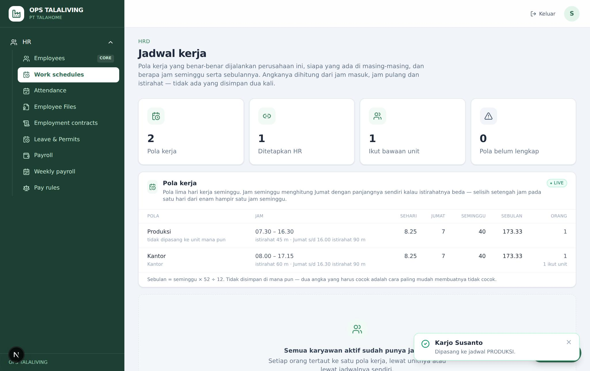
Berikutnya: Absensi: impor mesin, tap yang terlewat, dan menandai hari
Berkas pribadi karyawan, satu slot per jenis dokumen. Boleh dicatat nomornya saja dulu (pemindaiannya menyusul) atau langsung dengan scan/foto. Nomor dokumen disimpan tertutup; membukanya tercatat di audit.
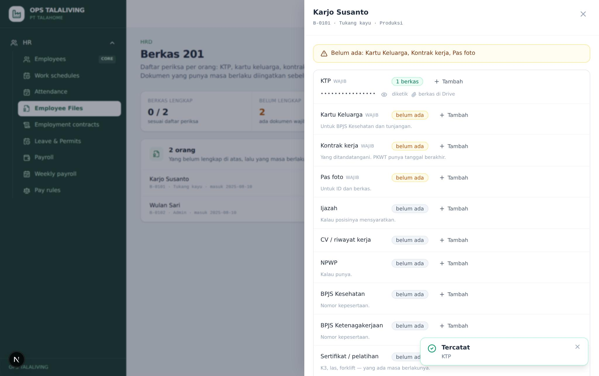
Kontrak didaftarkan sebagai draft, kertas yang ditandatangani dilampirkan, sepuluh poin wajib dijawab dengan kalimat aslinya, lalu diberlakukan. Kontrak baru yang diberlakukan menggantikan kontrak lama orang yang sama.
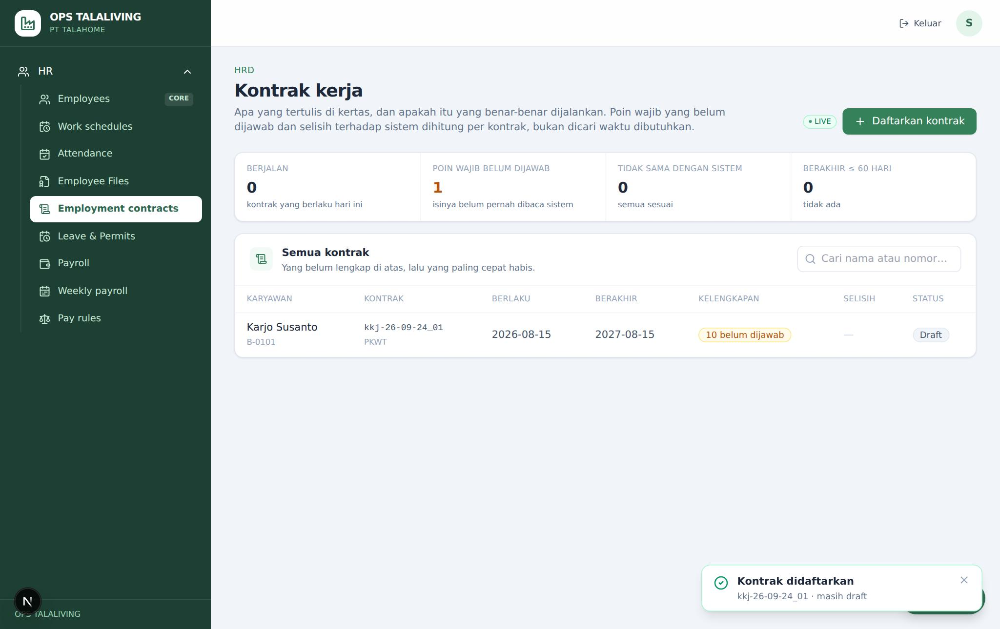
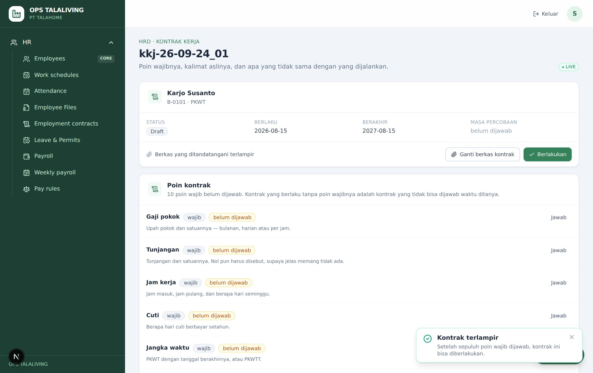
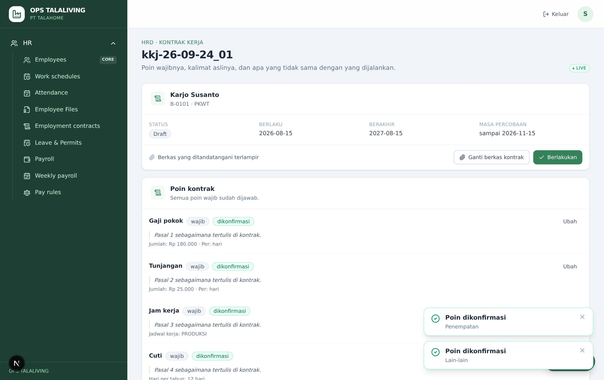
Kontrak tidak bisa diberlakukan, katanya berkas belum terlampir.
Buka kontraknya, tekan "Lampirkan kontrak" dan pilih scan/PDF yang sudah ditandatangani. Setelah itu jawab poin wajib yang masih kosong, lalu "Berlakukan".
Tap dari mesin sidik jari diimpor per file. Satu hari kerja dibaca dari empat tap: masuk, keluar istirahat, kembali, pulang. Hari yang tapnya tidak lengkap dan tidak diberi tanda tetap "belum dibaca" dan menahan persetujuan gaji.
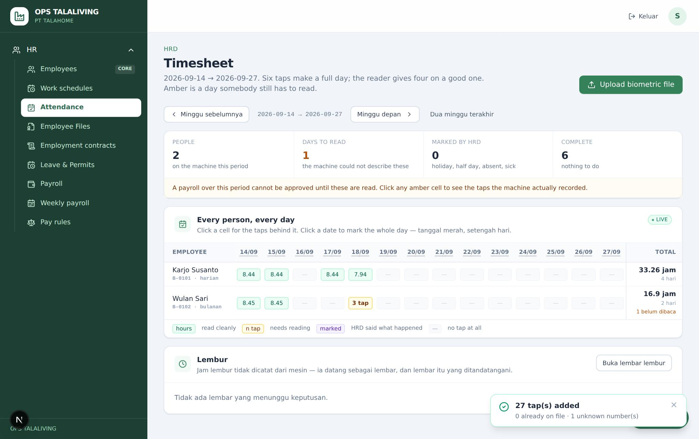
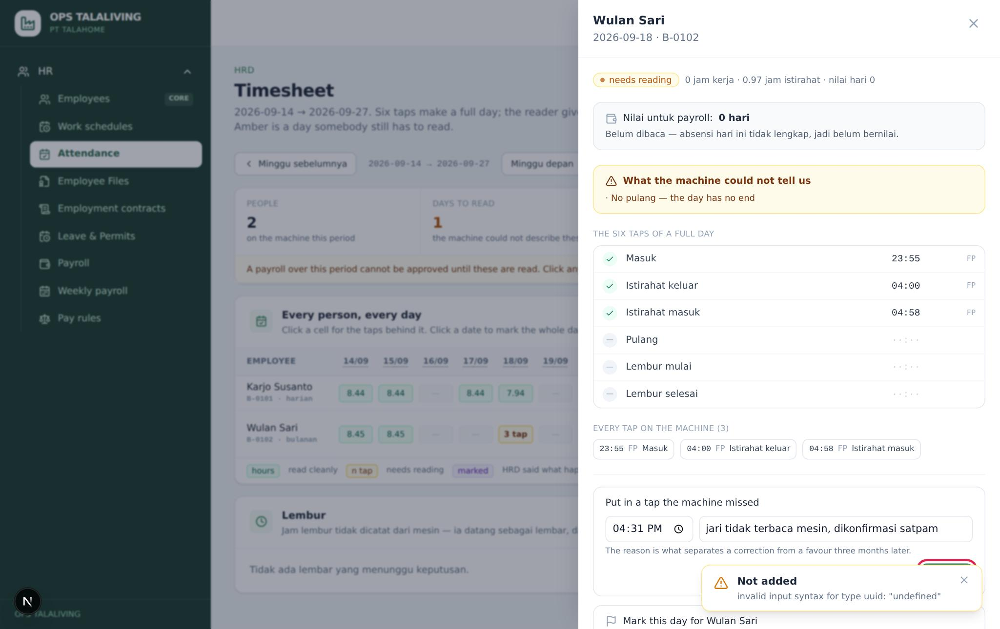
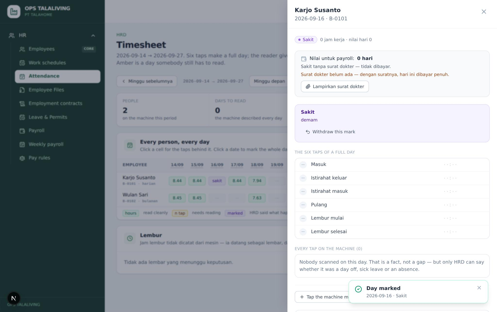
Kenapa hari seseorang masih "belum dibaca" padahal dia masuk?
Satu hari dibaca dari empat tap: masuk, keluar istirahat, kembali dari istirahat, pulang. Kalau salah satunya tidak ada (misalnya jari tidak terbaca saat pulang), hari itu belum dibaca. Klik selnya, tekan "Tap the machine missed", isi jam dan alasannya.
Tap dari file mesin ada yang tidak masuk. Kenapa?
Nomor di mesin tidak cocok dengan nomor karyawan mana pun. Ringkasan impor menyebut nomor itu. Tambahkan atau betulkan karyawannya di HRD → Karyawan, lalu impor ulang file yang sama — tap yang sudah masuk tidak dobel.
Berikutnya: Cuti, izin dan sakit
Pengajuan cuti, izin atau sakit dicatat dengan tanggal dan alasannya, lalu diputuskan. Persetujuan langsung menulis tanda hari di absensi dan mengurangi sisa cuti; penolakan wajib beralasan karena orangnya akan membacanya.
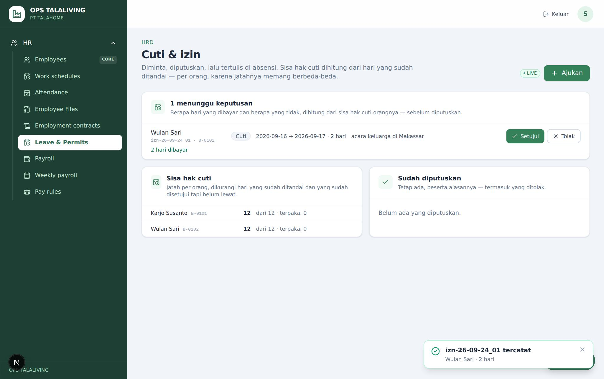
Cuti sudah disetujui, apakah absensinya perlu ditandai lagi?
Tidak. Persetujuan langsung menulis tanda cuti/izin/sakit di hari-hari itu. Hari yang sudah punya tanda lain tidak ditimpa.
Run gaji adalah satu periode (seminggu untuk harian, sebulan untuk bulanan). Baris gaji tidak disimpan: dihitung dari absensi dan lembur yang disetujui setiap kali dibaca, jadi tidak ada tombol hitung. Penyesuaian (bonus, potongan, kasbon) ditambahkan tangan dengan alasan.
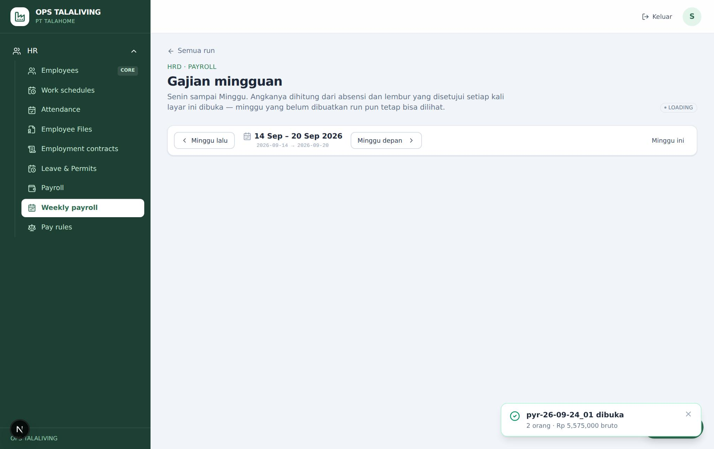
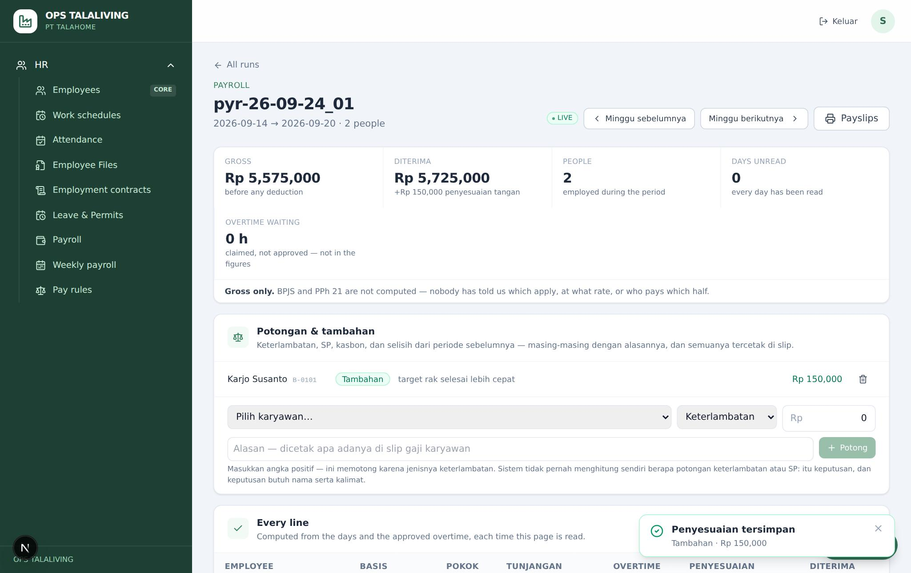
Di mana tombol untuk menghitung gaji?
Tidak ada. Baris gaji dihitung dari absensi, tanda hari, cuti dan lembur yang disetujui setiap kali halaman run dibuka. Menutup hari yang belum dibaca langsung mengubah angkanya.
Bisakah John Lau memberi tahu gaji atau absensi seseorang?
Tidak. Gaji, absensi per orang dan berkas 201 tidak dibaca lewat percakapan (keputusan pemilik). John Lau bisa menjelaskan cara memakai layarnya; angkanya dibaca di layar HRD oleh yang berhak.
Berikutnya: Menyetujui run gaji (pimpinan)
Pimpinan (pemegang approve_funds) memeriksa dan menyetujui run. Yang menyiapkan run tidak bisa menyetujuinya. Run ditolak disetujui selama masih ada hari yang belum dibaca.
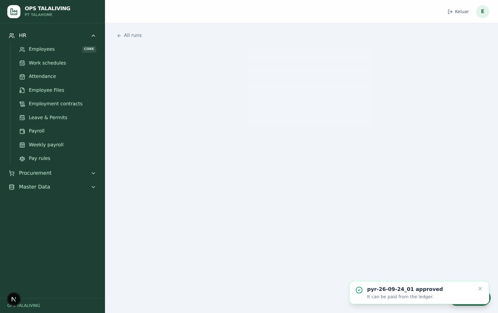
Kenapa run gaji tidak bisa disetujui?
Biasanya karena masih ada hari yang belum dibaca (open_days): angka "Days unread" di halaman run lebih dari nol. Tekan "Read them" dan selesaikan hari-hari itu di Absensi. Selain itu hanya pemegang approve_funds yang bisa menyetujui, dan yang menyiapkan run tidak bisa.
Berikutnya: Membayar run gaji dan mencatatnya ke buku besar
Keuangan (pemegang post_ledger) membayar run yang sudah disetujui dari halaman run itu sendiri. Satu baris buku besar untuk seluruh run, dengan bukti transfer, dan run langsung tertulis PAID. Gaji per orang tidak ditulis ke buku besar.
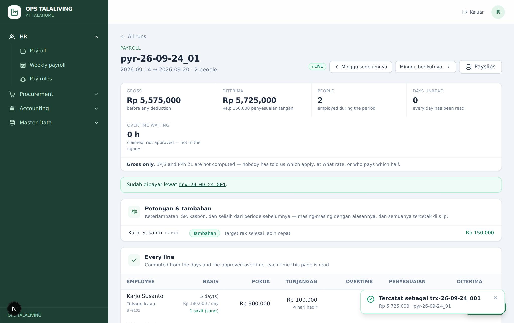
Nominal yang dibayar harus sama dengan "Diterima"?
Tidak ditolak kalau berbeda. Apakah run membayar bruto plus penyesuaian atau dikurangi bagian BPJS karyawan belum diputuskan (Q56), jadi nominal yang dibayar dicatat apa adanya dan angka run tersimpan di sebelahnya.
Kenapa gaji per orang tidak ada di buku besar?
Buku besar dibaca lebih banyak orang daripada yang boleh melihat gaji. Yang dicatat satu baris untuk seluruh run; rinciannya tetap di halaman run gaji.
Slip gaji dicetak dari halaman run, delapan per lembar atau enam per lembar dengan rekap harian.